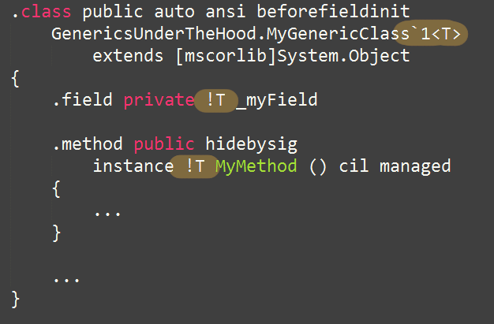

DOTNEXT Moscow 2015
@nikitin_a_a
https://alexandrnikitin.github.io/blog
I 💘 OSS: NSubstitute, ☑ CoreFX, ☑ CoreCLR
1M HTTP RPS < 5ms
2 billions of events per day
8 billions of user profiles
“Šuo ir kariamas pripranta.”
Lithuanian proverbs
var o = new object();
Instance on heap:
| Sync block address |
| Method Table address |
| Field1 |
| FieldN |
| EEClass address |
| Interface Map Table address |
| Inherited Virtual Method addresses |
| Introduced Virtual Method addresses |
| Instance Method addresses |
| Static Method addresses |
| Static Fields values |
| InterfaceN method addresses |
| Other |
SOS (Son of Strike)
SOSEX (SOS extensions)
An example class:
public class MyClass
{
private int _myField;
public int MyMethod()
{
return _myField;
}
}
An instance:
var myClass = new MyClass();
0:003> !DumpHeap -type GenericsUnderTheHood.MyClass
Address MT Size
0000004a2d912de8 00007fff8e7540d8 24
Statistics:
MT Count TotalSize Class Name
00007fff8e7540d8 1 24 GenericsUnderTheHood.MyClass
Total 1 objects
HOWTO: Debugging .NET with WinDbg
Book: "Pro .NET Performance" by Sasha Goldshtein, Dima Zurbalev, Ido Flatow
An example class:
public class MyGenericClass<T>
{
private T _myField;
public T MyMethod()
{
return _myField;
}
}
Compiles to:
An instance:
var myObject = new MyGenericClass<object>();
Method Table:
EEClass:
An instance:
var myString = new MyGenericClass<string>();
Method Table:
An instance:
var myInt = new MyGenericClass<int>();
Method Table:
EEClass:
Unknown type -> Runtime handle lookup
public class MyGenericClass<T>
{
public void MyMethod()
{
new T();
}
}
Design and Implementation of Generics for the .NET Common Language Runtime
Simplified version:
public class BaseClass<T>
{
private List<T> list = new List<T>();
public BaseClass()
{
foreach (var _ in list) { }
}
public void Run()
{
for (var i = 0; i < 11; i++)
if (list.Any(_ => true))
return;
}
}
public class DerivedClass : BaseClass<object> { }
Benchmark? BenchmarkDotNet! The source
[BenchmarkTask(platform: BenchmarkPlatform.X86, jitVersion: BenchmarkJitVersion.LegacyJit)]
[BenchmarkTask(platform: BenchmarkPlatform.X64, jitVersion: BenchmarkJitVersion.LegacyJit)]
[BenchmarkTask(platform: BenchmarkPlatform.X64, jitVersion: BenchmarkJitVersion.RyuJit)]
public class Jit_GenericsMethod
{
// ... BaseClass and DerivedClass ...
private BaseClass<object> baseClass = new BaseClass<object>();
private BaseClass<object> derivedClass = new DerivedClass();
[Benchmark]
public void Base()
{
baseClass.Run();
}
[Benchmark]
public void Derived()
{
derivedClass.Run(); // 3-5 times slower
}
}
"Just add two methods"
public class BaseClass<T>
{
//...
public void Method1()
{
}
public void Method2()
{
}
}
DWORD numMethodsAdjusted =
(bmtMethod->dwNumDeclaredNonAbstractMethods == 0)
? 0
: (bmtMethod->dwNumDeclaredNonAbstractMethods < 3)
? 3
: bmtMethod->dwNumDeclaredNonAbstractMethods;
DWORD nTypeFactorBy2 = (bmtGenerics->GetNumGenericArgs() == 1)
? 2
: 3;
DWORD estNumTypeSlots = (numMethodsAdjusted * nTypeFactorBy2 + 2) / 3;
CORINFO_GENERIC_HANDLE
JIT_GenericHandleWorker(
MethodDesc * pMD,
MethodTable * pMT,
LPVOID signature)
{
CONTRACTL {
THROWS;
GC_TRIGGERS;
} CONTRACTL_END;
MethodTable * pDeclaringMT = NULL;
if (pMT != NULL)
{
SigPointer ptr((PCCOR_SIGNATURE)signature);
ULONG kind; // DictionaryEntryKind
IfFailThrow(ptr.GetData(&kind));
// We need to normalize the class passed in (if any) for reliability purposes. That's because preparation of a code region that
// contains these handle lookups depends on being able to predict exactly which lookups are required (so we can pre-cache the
// answers and remove any possibility of failure at runtime). This is hard to do if the lookup (in this case the lookup of the
// dictionary overflow cache) is keyed off the somewhat arbitrary type of the instance on which the call is made (we'd need to
// prepare for every possible derived type of the type containing the method). So instead we have to locate the exactly
// instantiated (non-shared) super-type of the class passed in.
ULONG dictionaryIndex = 0;
IfFailThrow(ptr.GetData(&dictionaryIndex));
pDeclaringMT = pMT;
for (;;)
{
MethodTable * pParentMT = pDeclaringMT->GetParentMethodTable();
if (pParentMT->GetNumDicts() <= dictionaryIndex)
break;
pDeclaringMT = pParentMT;
}
if (pDeclaringMT != pMT)
{
JitGenericHandleCacheKey key((CORINFO_CLASS_HANDLE)pDeclaringMT, NULL, signature);
HashDatum res;
if (g_pJitGenericHandleCache->GetValue(&key,&res))
{
// Add the denormalized key for faster lookup next time. This is not a critical entry - no need
// to specify appdomain affinity.
JitGenericHandleCacheKey denormKey((CORINFO_CLASS_HANDLE)pMT, NULL, signature);
AddToGenericHandleCache(&denormKey, res);
return (CORINFO_GENERIC_HANDLE) (DictionaryEntry) res;
}
}
}
DictionaryEntry * pSlot;
CORINFO_GENERIC_HANDLE result = (CORINFO_GENERIC_HANDLE)Dictionary::PopulateEntry(pMD, pDeclaringMT, signature, FALSE, &pSlot);
if (pSlot == NULL)
{
// If we've overflowed the dictionary write the result to the cache.
BaseDomain *pDictDomain = NULL;
if (pMT != NULL)
{
pDictDomain = pDeclaringMT->GetDomain();
}
else
{
pDictDomain = pMD->GetDomain();
}
// Add the normalized key (pDeclaringMT) here so that future lookups of any
// inherited types are faster next time rather than just just for this specific pMT.
JitGenericHandleCacheKey key((CORINFO_CLASS_HANDLE)pDeclaringMT, (CORINFO_METHOD_HANDLE)pMD, signature, pDictDomain);
AddToGenericHandleCache(&key, (HashDatum)result);
}
return result;
}
Generic method:
public class MyClassWithGenericMethod
{
public T MyGenericMethod<T>(T arg)
{
return arg;
}
}
Generic struct:
public struct MyGenericStruct<T>
{
private T _myField;
public T MyMethod()
{
return _myField;
}
}